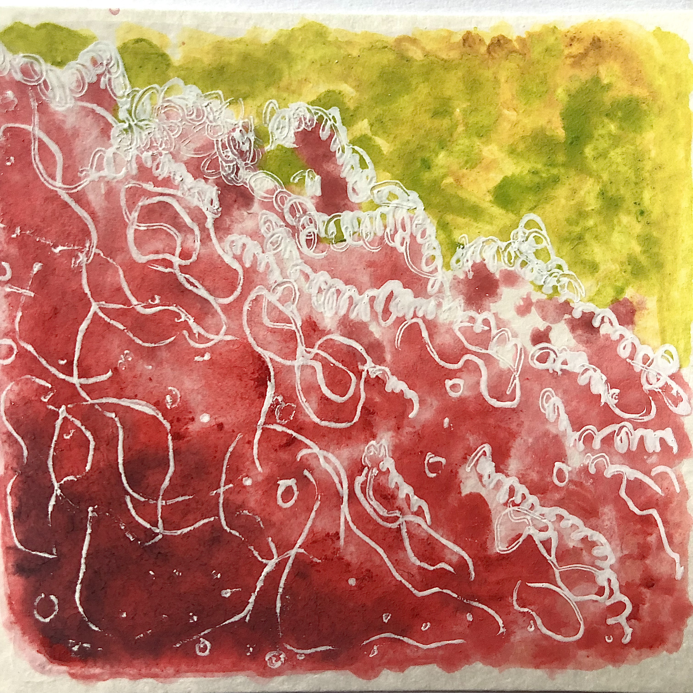
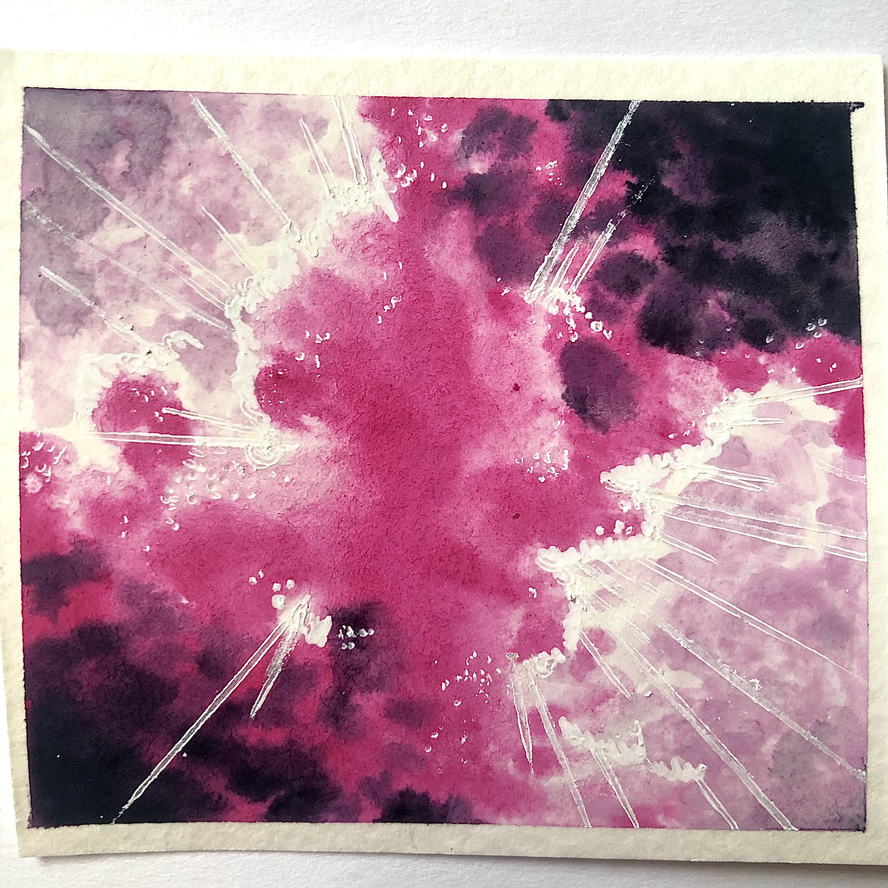

<!DOCTYPE html>
<html lang="en">
<head>
    <meta charset="UTF-8">
    <meta http-equiv="X-UA-Compatible" content="IE=edge">
    <meta name="viewport" content="width=device-width, initial-scale=1.0">
    <title>Interviews</title>
    <link rel="stylesheet" href="style.css">
</head>
</html>

<body>
    <div id="wrapper">
        <header>
            <h1>Solomon Vidal</h1>
            <h2>Who is Feeling the Music?</h2> 
            <nav>
                <div class="links">
                    <a href="index.html">Home</a>
                    <a href="about.html">About</a>
                    <a href="interviews.html">Interviews</a>
                    <a href="contact.html">Contact</a>
                </div>
            </nav>
        </header>

        <main>
            <div class="flexbox">
                <div class="music">
                    
                </div>
                <div class="feel-the-music-text">
                    <h3>Erning Escanilla</h3>
                    <p>The first interviewee is an 81 year old gentleman who listens to an array of music everyday.</p>
                </div>

                <button onclick="erning()">Click to Expand Interview</button>

                <section id="hiddenE" style="display:none">
                    <h3>Interview 1: Erning Escanilla</h3>
                    <p>The very first interviewee, Ernesto Escanilla, is my grandfather. I decided to interview him first not only because of the difference in our age and gender but also because of our tastes in music. While it’s expected for us to have different tastes in music because of the years in which we grew up, I’m interested in how certain music that my grandpa listens to affects him.</p>

                    <h3></h3>
                    <p><p>

                    <h3></h3>
                    <p><p>

                    <h3></h3>
                    <p><p>

                </section>

            </div>
            
            <div class="flexbox">
                <div class="music">
                    
                </div>
                <div class="feel-the-music-text">
                    <h3>Cecilia Vidal</h3>
                    <p>The second interviewee is a woman of 52 years who listens to music as a form of worship and prayer.</p>
                </div>

                <button onclick="cecilia()">Click to Expand Interview</button>

                <section id="hiddenC" style="display:none">
                    <h3>Interview 2: Cecilia Vidal</h3>
                    <p>The second interviewee, Cecilia Vidal, is my mother. I decided to interview her second because, chronologically, she is closer to me in age than my grandfather so I was interested in seeing how our tastes differ and if they’re more similar because of our age and gender. Although I’m closer to my mother in age and gender, I want to delve deeper into the differences in our music preferences and how music affects not only us but things like faith.<p>

                    <h3></h3>
                    <p><p>

                    <h3></h3>
                    <p><p>
                </section>

            </div>
    
            <div class="flexbox">
                <div class="music">
                    
                </div>
                <div class="feel-the-music-text">
                    <h3>Kriz(Zelda) Howell</h3>
                    <p>The third interviewee, a woman of 31 years who listens to music while she creates artwork.</p>
                </div>

                <button onclick="zelda()">Click to Expand Interview</button>

                <section id="hiddenZ" style="display:none">
                    <h3>Interview 3: Krizelda Howell</h3>
                    <p>The third, and final, interviewee, Krizelda, aka Zelda, Howell is my — as you can probably assume from the last name — recently married older sister. While we’re the closest in age to our immediate family, we’re still ten years apart. I wanted to interview her last because I suspect she has a closer music taste to me than both my grandpa and my mom. Because of our ten-year age gap, we’re still separated in terms of generations; while my sister is a Millennial, I’m part of Gen Z. Based on listening to music in the car together, I can tell we have some distinct differences and similarities that I want to look into further.<p>

                    <h3></h3>
                    <p><p>

                    <h3></h3>
                    <p><p>
                </section>

            </div>
        </main>
    
        <br>
        <br>
    
    </div>
        
    <footer>
        <h2>&copy; Vidal 2023</h2>
    </footer>

    <a href="#top" class="back-to-top">&uarr;</a>
    <script src="js.js"></script>
        
</body>